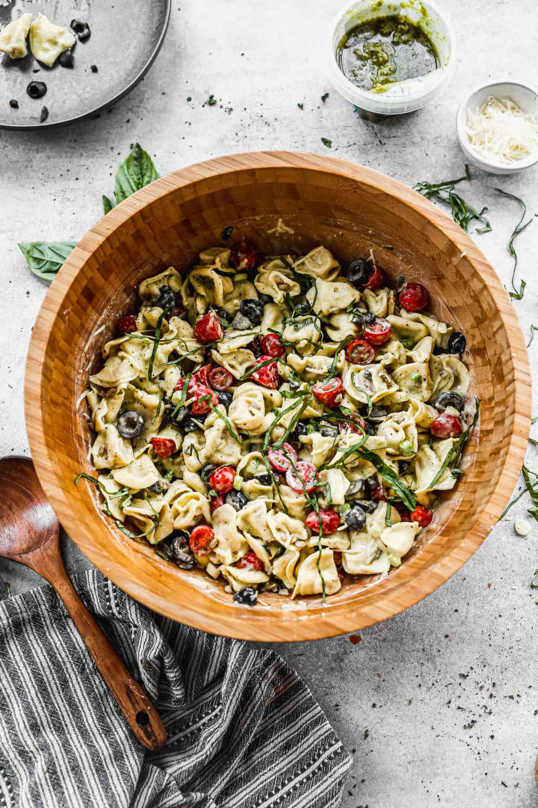

Pesto Tortellini

Image Source: Taste Better from Scratch - Pesto Tortellini
Description
This one is extra easy—perfect for a 15 minute meal.
Pre-packaged tortellini, ready-made pesto, and cherry tomatoes and herbs if you have them sitting around.
Cheese too.
Ingredients
- Tortellini with any filling, the ready in 5-min after boiling variety
- Pesto, any kind, jarred
- (optional) Cherry tomatoes
- (optional) Basil
Steps
- Boil water and cook the tortellini according to the package instructions
- While the tortellini is cooking, if you want to add cherry tomatoes and basil, cut the tomatoes in half and chiffonade the basil
- When the tortellini is finished cooking, drain it and let it cool for a couple of minutes
- Add the tortellini, several scoops of pesto, and optionally the tomatoes and basil, then stir to combine
- Enjoy!